| Block | Share | Format | Part |
|---|---|---|---|
| The 16-cell results table: Bertrand, Stackelberg, Cournot, collusion × output, price, Total Value, profit. Possibly also: where consumer surplus, producer surplus and deadweight loss sit on the graph (A.5) | a bit over ⅓ | Calculate. You get only the demand curve and MC | A |
| Market for ideas (Joel Mokyr, the Enlightenment) | under ⅓ | Multiple choice | B |
| Solow graph: steady state, war casualties, policymakers | rest | Multiple choice | C |
| Solow at company level: the computers calculation | rest | Calculate | D |
Two firms sell the same service. You are told the demand curve and marginal cost and nothing else. You fill in four numbers for each of four market structures.
| Symbol | What it means | Packet example |
|---|---|---|
| Q | Quantity: the total amount sold by both firms together, here rides per minute | Q = 192 under Bertrand |
| q₁, q₂ | The quantity sold by firm 1 and by firm 2 separately, so Q = q₁ + q₂ | Cournot: q₁ = q₂ = 64 |
| P | Price of one unit (one ride), in baht (THB) | P = 147 under Bertrand |
| P = A − Q | The demand curve: the price at which customers buy exactly Q units. Each extra unit sold lowers the price by 1 | P = 339 − Q |
| A | The number at the front of the demand curve: the price at which nobody buys (Q = 0) | A = 339 |
| MC, C | Marginal cost: what one extra unit costs a firm to produce. Same for both firms, and constant. We write it as C | C = 147 |
| G | The gap A − C: a helper we define to make the arithmetic short (not in the packet) | G = 339 − 147 = 192 |
| R | Revenue: money taken in, price × quantity | |
| MR | Marginal revenue: the extra revenue from selling one more unit | |
| Total Value | P × Q: total customer spending on the service | 28,224 under Bertrand |
| Profit | Revenue minus cost: (P − C) × Q, i.e. margin per unit × units sold | 9,216 under collusion |
| CS | Consumer surplus: what buyers would have paid minus what they did pay (section A.5) | 4,608 under collusion |
| PS | Producer surplus: price received minus marginal cost, over all units sold (here equal to profit) | 9,216 under collusion |
| DWL | Deadweight loss: value of trades that would have benefited both sides but never happen | 4,608 under collusion |
This is the packet's table (slide 21), for Grab and Uber (the two firms) with demand P = 339 − Q and MC = 147. Columns run from most competition (left) to least (right).
| Bertrand price war | Stackelberg sequential | Cournot simultaneous | Collusion act as monopoly | |
|---|---|---|---|---|
| Total output Q (rides/min) | 192 | 144 | 128 | 96 |
| Price P (THB) | 147 | 195 | 211 | 243 |
| Total Value = P × Q (THB/min) | 28,224 | 28,080 | 27,008 | 23,328 |
| Total profit (THB/min) | 0 | 6,912 | 8,192 | 9,216 |
You do not need to memorise these numbers: the quiz will use a different demand curve. You need the method, which is the same every time.
Write the demand curve as P = A − Q. A is the price at which nobody buys; C is the marginal cost. Their difference G = A − C is the most output that can ever be sold at a price that covers cost. Packet: G = 339 − 147 = 192. Every output in the table is a simple fraction of G.
Revenue R is price times quantity. Replace P with the demand curve: R = P × Q = (A − Q)Q = AQ − Q². Marginal revenue MR, the extra revenue from one more unit, is the derivative of R with respect to Q (AQ becomes A, Q² becomes 2Q): MR = A − 2Q. MR falls twice as fast as the demand curve. A profit-maximising firm produces where MR = MC.
Idea. If the two firms agree to coordinate, they behave like a single monopoly and split the market.
Idea. The service is identical, so whoever is cheaper gets every customer. If your rival charges anything above cost, you undercut by 1 baht and take the whole market. That only stops when price = marginal cost.
Idea. Each firm picks its own output (firm 1 picks q₁, firm 2 picks q₂) taking the rival's output as given. The equilibrium is where both choices are best replies to each other.
Idea. The leader (firm 1, output q₁) commits to its output first; the follower (firm 2, output q₂) sees it and then chooses. It knows the follower will then reply with the Cournot reaction function, and it uses that knowledge.
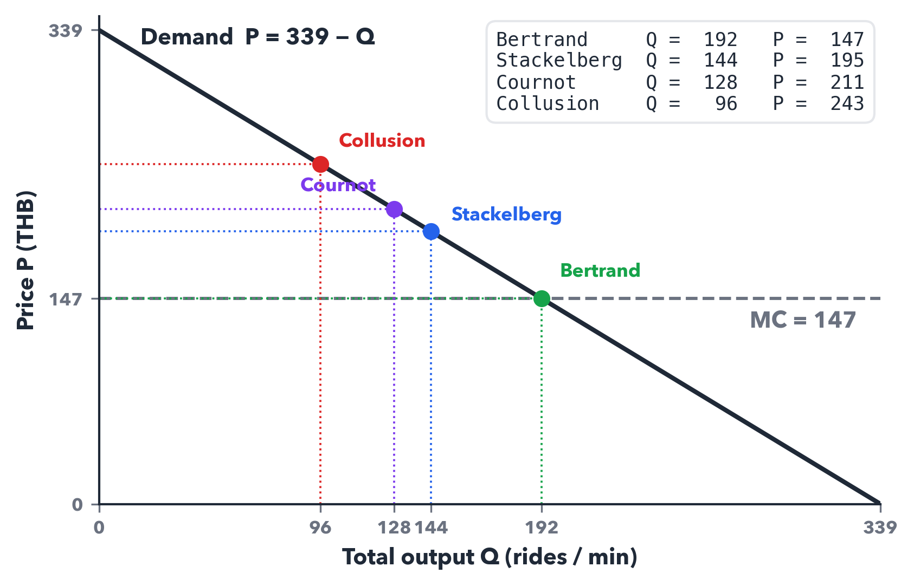
A = 339, C = 147, so G = 192.
| Output | Price = 339 − Q | Total Value = P × Q | Profit = (P − 147) × Q | |
|---|---|---|---|---|
| Bertrand | 192 | 339 − 192 = 147 | 147 × 192 = 28,224 | 0 × 192 = 0 |
| Stackelberg | ¾ × 192 = 144 | 339 − 144 = 195 | 195 × 144 = 28,080 | 48 × 144 = 6,912 |
| Cournot | ⅔ × 192 = 128 | 339 − 128 = 211 | 211 × 128 = 27,008 | 64 × 128 = 8,192 |
| Collusion | ½ × 192 = 96 | 339 − 96 = 243 | 243 × 96 = 23,328 | 96 × 96 = 9,216 |
These three are areas on the price–quantity graph. For the quiz it is enough to point to each one. Start from the market price P and the quantity sold Q:
| Area | Where it is on the graph | Meaning |
|---|---|---|
| CS consumer surplus | Below the demand curve, above the price line, from 0 to Q. A triangle. | Buyers' gain: the demand curve shows what each buyer was willing to pay, and they only paid P. |
| PS producer surplus | Above the supply (MC) curve, below the price line, from 0 to Q. A triangle if supply slopes up; a rectangle if MC is flat, as in our table. | Sellers' gain: they received P but each unit only cost MC. With flat MC and no fixed costs, PS = profit. |
| DWL deadweight loss | The triangle between demand and MC, from the Q actually sold to the competitive Q* (where demand meets MC). It points at the competitive equilibrium. | Lost value: units buyers valued above their cost that nobody produced. It goes to no one. |
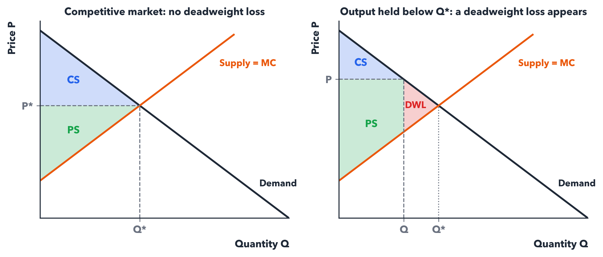
In our table, cutting output moves surplus from consumers to the firms and destroys some along the way:
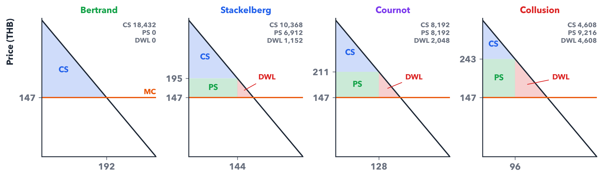
| Bertrand | Stackelberg | Cournot | Collusion | |
|---|---|---|---|---|
| Total output | ||||
| Price | ||||
| Total Value | ||||
| Total profit |
More practice: the study app's Fill the table drill creates a new market every time.
Why did the Enlightenment, and then the Industrial Revolution, happen in Western Europe and not in China? Mokyr's answer is a market: ideas have a demand side and a supply side, and political fragmentation pushes on both.
Joel Mokyr is an economic historian who received the 2025 Nobel Prize for explaining innovation-driven economic growth, using historical analysis. His claims:
An intellectual and philosophical movement that dominated Europe in the 17th and 18th centuries. It took place in Western Europe, not in China or the Islamic world, and later snowballed into the Industrial Revolution. It was a ferment of public debate that we would now call open science: salons (such as Madame Geoffrin's) hosted scientific and literary discussion, and knowledge from deep science to practical tinkering became common.
Axes. Vertical: the fragmentation index, meaning how politically divided a region is (high for Europe's many states, low for unified China). Horizontal: the number of ideas, meaning useful knowledge that drives growth.
Fragmentation affects both sides of the market, so there are two curves and multiple equilibria:
| Curve | Slope | Why |
|---|---|---|
| Size of audience (demand for ideas) | Downward | The more fragmented the region, the smaller the audience in each state (“each castle”). A small audience discourages innovators. Unified China could have had a huge audience, and so in principle many ideas. |
| Risk of persecution (supply of ideas) | Upward | The more fragmented the region, the less effective persecution is: a thinker can flee across a border, and overlapping, poorly coordinated jurisdictions leave room to manoeuvre. More fragmentation means safer provocative ideas, and so more ideas. |
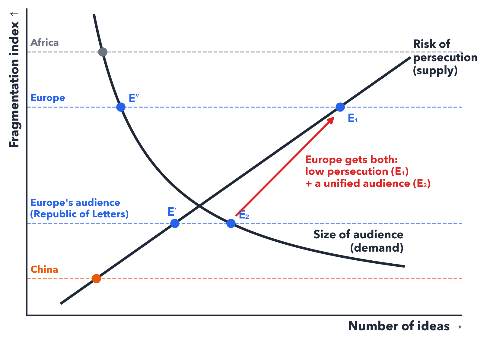
On audience alone, unified China should have produced many ideas. But low fragmentation means a high risk of persecution, so China sits low on the persecution line (the point labelled China). The unified state imposed its preference for unity and collective values on the left-side equilibrium. The problem was supply (persecution), not demand (audience).
Africa had even higher fragmentation than Europe, but a lower number of ideas, because of a lack of intellectual consolidation and low payoffs relative to the cost of ideas. Lesson: a fragmented state system is never a sufficient condition for a flourishing market for ideas.
Europe was politically fragmented (low persecution, at E₁) but had a unified market for ideas: the Republic of Letters, a cross-border community of thinkers who read and argued with one another. So its audience behaved like a unified market's (E₂) while its persecution risk stayed that of a fragmented one. The result: greater levels of ideas due to open science and reduced risks of persecution.
Every Solow question on this quiz is a picture question. If you can draw the diagram from memory and move one curve, you can answer all of them.
| Symbol | What it means | Example / unit |
|---|---|---|
| Y | Total output of the economy (real GDP) | goods per year |
| K | Total capital: machines, buildings, equipment | |
| L | Labour: the number of workers | |
| k = K/L | Capital per worker (lower-case = per worker) | the horizontal axis |
| y = Y/L | Output per worker, i.e. productivity, income per person | |
| f(k) | The production function: “output per worker when each worker has k capital”, so y = f(k) | e.g. f(k) = √k |
| s | The saving rate: share of income saved (and invested) | Japan 0.24 = 24% |
| i | Investment per worker: new capital bought this year, i = s·f(k) | |
| c | Consumption per worker: income not saved, c = (1 − s)·f(k) | |
| δ (delta) | The depreciation rate: share of capital that wears out each year | 0.1 = 10% a year |
| n | The population growth rate: how fast the number of workers grows | 0.02 = 2% a year |
| Δk (delta k) | The change in capital per worker from one year to the next (Δ means “change in”) | |
| k*, y*, c* | The steady-state values: where k stops changing (the star marks the steady state) | |
| MPK | Marginal product of capital: extra output from one more unit of capital = the slope of f(k) | |
| k*gold | The Golden Rule steady state: the k* with the most consumption |
Everything is measured per worker: k = K/L is capital K divided by workers L, and y = Y/L is output Y divided by workers L.
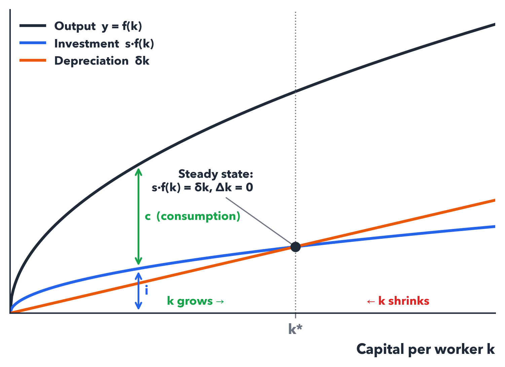
The change in capital per worker, Δk, is what is invested, s·f(k), minus what wears out, δk: Δk = s·f(k) − δk.
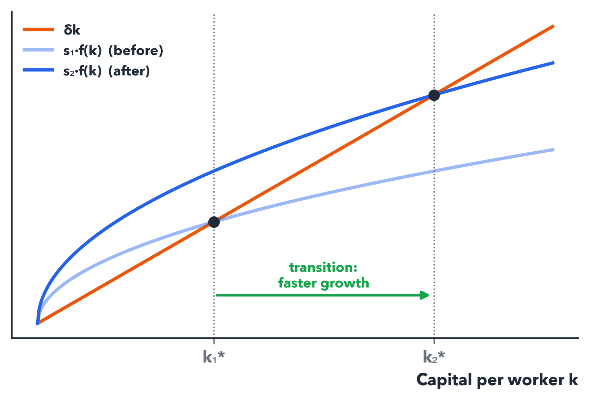
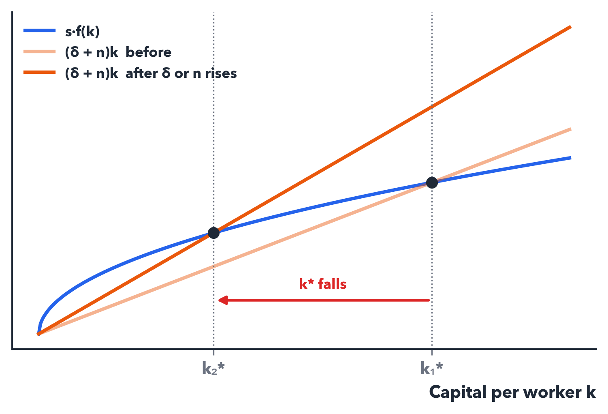
| Change | What moves | New k*, y* |
|---|---|---|
| Saving rate s rises | s·f(k) shifts up | Higher |
| Depreciation δ rises | δk line gets steeper | Lower |
| Population growth n rises (the line becomes (δ + n)k: capital per worker is also diluted by n new workers) | Line gets steeper: new workers need equipping | Lower: countries with faster population growth have less capital per worker and lower incomes |
Both stories start in steady state. The key question is always: what happens to k = K/L? A war does not move the curves, because s, δ and technology are unchanged. It moves the economy along them, and the economy then returns to the same k*.
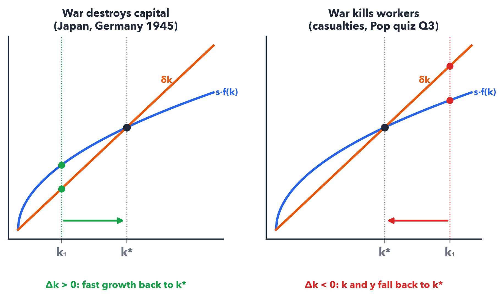
| War destroys capital Japan and Germany, 1945 | War kills workers casualties, Pop quiz Q3 | |
|---|---|---|
| What falls | K | L |
| k = K/L | falls below k* | rises above k* |
| Immediately | Output falls | Total output Y falls (fewer workers), but output per worker rises (each worker has more capital) |
| Afterwards | Investment > depreciation, so k grows fast back to k*: above-normal growth | Depreciation > investment, so k falls back to k*: output per worker falls, and its growth rate is negative (below normal) until the steady state |
| Evidence | 1948–72 growth per person: Japan 8.2%, Germany 5.7%, US 2.2%. Saving rates: Japan 24%, Germany 26%, US 22% | Why negative? In steady state, growth of output per worker is zero (no technological change). The economy is coming down to it, so growth must be below zero. |
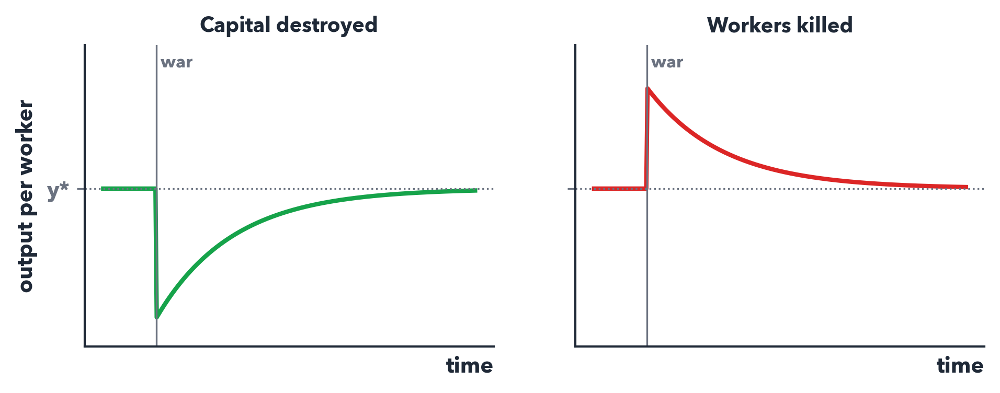
People care about consumption, not capital for its own sake. A policymaker who wants the highest well-being picks the steady state with the highest consumption: the Golden Rule level of capital, k*gold.
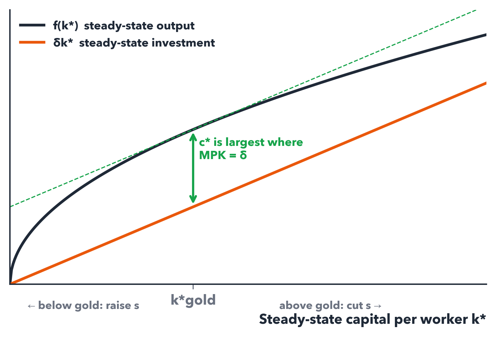
| Starting point | Policy | Consumption right away | Consumption in the long run |
|---|---|---|---|
| Too much capital (k* above gold) | Cut s | Jumps up (an immediate gain for the current generation) | Falls gradually with output and investment, but ends higher than at the start |
| Too little capital (k* below gold) | Raise s | Dips (the current generation sacrifices) | Rises with output and investment, and ends higher than at the start |
Technology makes each worker more effective. To keep one computer per effective worker, a company must replace worn-out computers, equip new workers, and equip the extra effective workers that technology creates.
| Symbol | What it means | Slide 88 |
|---|---|---|
| N | The starting number of computers, which equals the starting number of workers (one computer each) | N = 10 |
| δ (delta) | Depreciation rate: share of computers that break or wear out in the period | δ = 0.1 (10%) |
| n | Workforce growth rate: new hires as a share of current workers | n = 0.2 (20%) |
| g | Technology growth rate: how much more effective each existing worker becomes | g = 1.0 (100%: each counts as 2) |
| L | The number of actual workers | |
| E | The efficiency of labour: how much one worker gets done; it grows at g | |
| L × E | Effective workers: workers counted by how much they can do | 22 |
| k | Computers per effective worker; the firm keeps it at 1 | k = 1 |
The efficiency of labour E grows at rate g (technology), and the number of workers L grows at rate n. So effective labour L × E grows at n + g. Technological progress does not create more actual workers, but it creates more effective workers. Capital per effective worker stays constant only if investment covers (δ + n + g)k: δk replaces worn-out capital, nk equips new workers, and gk equips the new effective workers.
Start with N computers and N workers (k = 1).
10 computers, 10 workers. δ = 0.1, n = 0.2, g = 1.0.
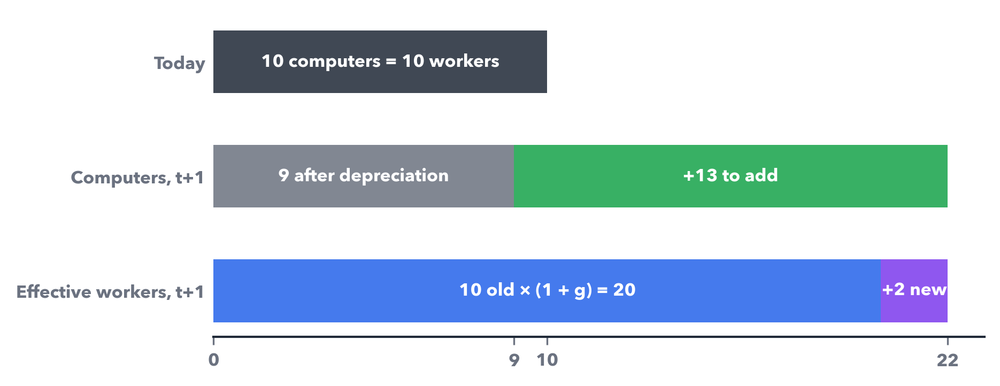
10 computers, 10 workers. δ = 0.2, n = 0.2, g = 0.5.
Left: 10 × 0.8 = 8. Old workers: 10 × 1.5 = 15. New: 2. Effective: 17. Add: 17 − 8 = 9 = 0.9 × 10 ✓. (The slide's last line says “22 computers for 22 effective workers”, copied from slide 88. The correct figure is 17 computers for 17 effective workers.)
| Bertrand | Stackelberg | Cournot | Collusion | |
|---|---|---|---|---|
| Why | undercut until P = MC | leader G/2, follower G/4 | G/3 each, reaction q₁ = G/2 − q₂/2 | MR = A − 2Q = C |
| Total Q | G | ¾G | ⅔G | ½G |
| Price | P = A − Q (always off demand, never off MR) | |||
| Total Value | P × Q (not consumer surplus; no fixed pattern, so always calculate) | |||
| Total profit | 0 | (P − C) × Q = (G − Q) × Q. Rises left to right; collusion = (G/2)² | ||
Surplus areas: CS = triangle under demand, above P. PS = area above MC, below P (= profit when MC is flat). DWL = triangle between demand and MC from Q to the competitive Q*; zero under Bertrand, largest under collusion.
Mokyr, Nobel 2025: innovation-driven growth; cultural openness; useful knowledge = propositional (why) + prescriptive (how); supportive institutions; protectionism threatens creative destruction. Enlightenment: 17th–18th c., Western Europe, open science, led to the Industrial Revolution. Graph: vertical = fragmentation, horizontal = number of ideas. Audience (demand) slopes down; persecution risk (supply) slopes up. China: big audience, but low fragmentation means high persecution and few ideas (supply problem). Africa: fragmented but few ideas (no intellectual consolidation, low payoffs relative to cost), so fragmentation is not sufficient. Europe: fragmentation + unified market for ideas (Republic of Letters), reduced access costs and an urban commercial class (demand), competition and diverse talent (supply). Open science: knowledge is non-rivalrous, like open source; rewarded with priority credit, not profit; diffusion, not exclusivity.
Curves: f(k) concave (diminishing MPK); s·f(k) = investment; δk straight line; c = gap between f(k) and s·f(k). Steady state: s·f(k*) = δk*, Δk = 0. Left of k*, k grows; right of k*, k shrinks. s up: curve up, k* and y* up, a level effect; faster growth only during the transition. δ or n up: line steeper, k* down (faster population growth means lower income per worker). War on capital: k below k*, above-normal growth (Japan 8.2%, Germany 5.7% vs US 2.2%). War on workers: Y falls, y rises; k above k*, so y falls back with negative growth. Wars move the economy, not the curves. Golden Rule: maximise c* = f(k*) − δk*, so MPK = δ. Above gold: cut s, c jumps up now and ends higher. Below gold: raise s, c dips now and ends higher.
Left = N(1 − δ). Effective = N(1 + g) + nN (new workers are not boosted). Add = effective − left = (δ + n + g)N. Slide 88: 9 left, 22 effective, add 13.
| Bertrand | Stackelberg | Cournot | Collusion | |
|---|---|---|---|---|
| Total output | 240 | 180 | 160 | 120 |
| Price | 60 | 120 | 140 | 180 |
| Total Value | 14,400 | 21,600 | 22,400 | 21,600 |
| Total profit | 0 | 10,800 | 12,800 | 14,400 |
Notice that Total Value rises from Bertrand to Cournot here, the opposite of the packet. This is why you calculate it instead of trusting a pattern. Profit still rises left to right, and collusion profit = 120² = 14,400 ✓.
| Bertrand | Stackelberg | Cournot | Collusion | |
|---|---|---|---|---|
| Total output | 120 | 90 | 80 | 60 |
| Price | 130 | 160 | 170 | 190 |
| Total Value | 15,600 | 14,400 | 13,600 | 11,400 |
| Total profit | 0 | 2,700 | 3,200 | 3,600 |
(a) Left 20 × 0.9 = 18. Effective 20 × 1.5 + 2 = 32. Add 32 − 18 = 14 = (0.1 + 0.1 + 0.5) × 20 ✓.
(b) Left 50 × 0.8 = 40. Effective 50 × 2 + 10 = 110. Add 110 − 40 = 70 = (0.2 + 0.2 + 1.0) × 50 ✓.
B1 — D. Fragmentation makes persecution less effective: thinkers can cross borders. (B gets the audience curve backwards: fragmentation shrinks the audience.)
B2 — C. China had the large audience; the binding problem was persecution under a unified state.
B3 — A. Africa was more fragmented than Europe but lacked intellectual consolidation and had low payoffs relative to cost.
B4 — B. A transnational community of thinkers: political fragmentation combined with a unified market for ideas.
B5 — C. Priority credit, not profit; diffusion, not exclusivity.
B6 — A. Propositional (why) and prescriptive (how) knowledge.
C1 — A. Right of k*, depreciation exceeds investment, so Δk < 0 and k falls back to k*.
C2 — B. A level effect: higher k* and y*, the same long-run growth rate.
C3 — C. Fewer workers means lower Y, but each remaining worker has more capital, so y rises.
C4 — B. k is above k*, so it falls back. Steady-state growth is zero, so growth on the way down is negative.
C5 — D. The line becomes (δ + n)k. A higher n makes it steeper and lowers k*. (A lower δ would flatten it.)
C6 — A. Cutting s frees output for consumption at once. As capital falls, c declines but settles above where it started.